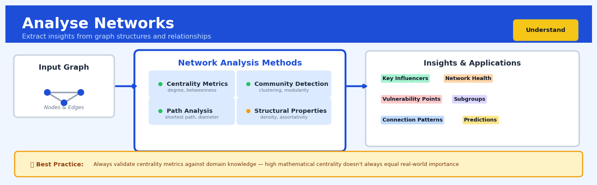

Analyse Networks#


Analyse Networks is a core transformation in the Understand workflow.
The 60-Second Version#
What it does: Network analysis reveals who influences whom, which entities are most connected, and how information or problems spread through your organization, customers, or systems.
When to use it: Use it when relationships between entities matter more than the entities themselves—fraud rings, customer referrals, supply chain dependencies, organizational silos, or disease transmission patterns.
What you get back: A visual map showing critical connectors, isolated clusters, and pathways of influence, enabling you to target interventions at leverage points rather than treating every node equally.
At a Glance
Difficulty |
Moderate |
Typical runtime |
Seconds to minutes on 100K relationships |
What you bring |
A list of connections (who/what links to whom/what) |
What you get |
Centrality scores, community clusters, and network visualizations |
Heuristix bucket |
Understand — Statistical Analysis & Profiling |
Networks amplify inequality: a few nodes always dominate, so decisions made assuming equal importance will miss where power and risk actually concentrate.
Learning Objectives#
After reading this chapter, a business user will be able to:
Identify business situations where network analysis provides value, such as detecting influential customers in referral programs, uncovering collaboration bottlenecks in organizations, or mapping supply chain vulnerabilities.
Interpret network visualizations and metrics like centrality scores, clustering coefficients, and community structures to explain which entities are most influential, how tightly connected groups are, and where information or resources flow inefficiently.
Prioritize interventions by determining which nodes or connections to target—such as which employees to involve in change initiatives, which products to co-promote, or which supply routes require redundancy.
After reading this chapter, a data scientist will be able to:
Construct network representations from diverse data sources including transaction logs, communication records, and relational databases, while handling directedness, edge weights, multi-edges, and temporal dynamics appropriately.
Select and tune centrality measures (degree, betweenness, PageRank, eigenvector) and community detection algorithms (Louvain, label propagation) based on network size, density, and the specific structural properties relevant to the business question.
Validate network analysis results by comparing against null models, assessing statistical significance of detected communities, diagnosing issues like disconnected components or scale-free artifacts, and determining when sparse data makes findings unreliable.
Overview#
Network analysis encompasses a family of mathematical and computational techniques for studying the structure, dynamics, and properties of systems composed of interconnected entities. At its core, network analysis represents complex relationships as graphs—vertices (nodes) connected by edges (links)—and applies graph-theoretic measures, centrality algorithms, community detection methods, and diffusion models to extract meaningful insights from relational data. This technique belongs to the broader family of relational analytics and graph theory, bridging discrete mathematics, statistical physics, and applied data science to reveal hidden patterns in connectivity that traditional tabular analysis cannot capture.
When to Use This#
Use this when you have data describing relationships between entities (customers, products, accounts, machines, people) and need to understand the structure of those relationships—network analysis excels at revealing influential nodes, clusters, and pathways.
Use this when you need to identify key influencers, hubs, or critical infrastructure in a system—centrality measures quantify node importance in ways that simple aggregation cannot.
Use this when you want to detect communities or clusters based on connectivity patterns rather than attribute similarity—community detection algorithms partition networks based on edge density.
Use this when you are investigating fraud, money laundering, or collusion—suspicious activity often manifests as unusual network structures (rings, stars, or dense cliques) in transaction or communication data.
Use this when modelling information spread, disease transmission, or failure cascades—diffusion models on networks capture contagion dynamics that depend on topology.
Use this when you need to recommend products, content, or connections based on network proximity—link prediction and collaborative filtering leverage graph structure.
Use this when optimising supply chains, logistics routes, or communication infrastructure—shortest path and flow algorithms solve practical optimisation problems on networks.
Do NOT use this when relationships are not meaningful or are trivially complete—a fully connected network contains no structural information.
Do NOT use this when your data is purely tabular with no relational component—forcing network structure onto independent observations adds complexity without insight.
Do NOT use this when the network is too small (fewer than ~20 nodes) or too sparse to support meaningful statistical analysis—metrics become unstable and community detection degenerates.
Questions This Answers#
Understanding Influence and Risk#
Who are the most influential customers in our network, and what happens if we lose them?
Which suppliers create the biggest bottleneck risk in our supply chain?
If our top partner goes out of business, how many of our clients are directly affected?
Why did that recall spread so quickly through our distribution network last month?
Which employees are critical bridges between departments—and what’s our succession risk if they leave?
Optimizing Strategy and Operations#
If we want to launch a new product, which 20 customers should we seed it with for maximum viral spread?
Should we focus our fraud prevention budget on monitoring individual accounts or the networks they’re connected to?
Which distribution centers should we close without fragmenting our logistics network?
How do we restructure our sales territories to minimize overlap while maintaining coverage?
How It Works#
Imagine you’re trying to understand influence in a large company. Rather than looking at org charts or job titles, you decide to track who emails whom over three months. Sarah in marketing emails twelve people daily; Tom in finance only emails three, but one of them is the CEO who forwards Tom’s insights to fifteen directors. On paper, Sarah looks more connected, but when you map the paths information travels, Tom turns out to be far more influential—he’s a bridge between ground-level insights and executive decision-making. Network analysis does exactly this: it looks beyond individual connections to see the shape of how things flow through a system, revealing who (or what) really matters based on position, not just quantity.
STEP 1: Raw relationships STEP 2: Build the graph
Sarah ←→ Tom (A)
Tom ←→ Alice │
Alice ←→ Bob ↓
Bob ←→ Alice (S)→(T)→(A)
Sarah ←→ Carol ↓ ↑↓
↓ ↓↓
(C) (B)
STEP 3: Calculate metrics STEP 4: Detect communities
Node | Connections | Betweenness ┌─────────────┐
───────────────────────────────── │ Group 1 │
Tom | 2 | HIGH ★ │ T─A─B │
Sarah | 2 | LOW │ │
Alice | 2 | MEDIUM └─────────────┘
Bob | 1 | LOW ┌─────────────┐
Carol | 1 | LOW │ Group 2 │
│ S─C │
(Tom bridges between clusters!) └─────────────┘
Step 1: Represent relationships as nodes and edges. The algorithm starts by taking your raw data—emails, friendships, web links, transactions—and builds a graph. Each entity (person, webpage, airport) becomes a node, and each connection becomes an edge. If the relationship has direction (Tom emails Alice, but Alice doesn’t email back), the edge gets an arrow. If it has weight (ten flights daily versus one per week), that number gets stored too.
Step 2: Map the structure of the entire network. Now the algorithm looks at the big picture. How many nodes are there? How densely connected is the network? Are there isolated clusters or is everything reachable from everything else? This reveals whether you’re looking at a tight-knit community, a fragmented landscape, or a hub-and-spoke system.
Step 3: Calculate centrality measures for each node. The algorithm assigns importance scores based on different criteria. Degree centrality counts direct connections (Sarah’s twelve contacts). Betweenness centrality identifies bridges—nodes that sit on the shortest paths between many others (Tom connecting two departments). Eigenvector centrality rewards connections to important nodes (being friends with influencers matters more than befriending nobodies).
Step 4: Identify communities and clusters. The algorithm searches for groups of nodes that connect densely to each other but sparsely to outsiders. It’s like finding cliques at a party—people who all know each other but rarely mingle with other groups. These communities often reveal natural divisions: departments, interest groups, or geographic regions.
Step 5: Analyze flow and propagation patterns. Finally, the algorithm can simulate how things spread through the network—information, disease, influence. It traces paths from node to node, identifying chokepoints where flow bottlenecks and superhighways where it races through.
The key insight: Network analysis reveals that position often matters more than attributes—being the bridge between two worlds makes you powerful regardless of your individual characteristics, because value flows through structure.
The Intuition#
Imagine a city’s road network. Some intersections are quiet residential corners; others are major junctions where traffic from many directions converges. If you wanted to identify which intersections, if blocked, would cause the most disruption, you would not simply count the number of roads meeting there. You would consider how many journeys pass through that point, whether alternative routes exist, and how that intersection connects different neighbourhoods. Network analysis formalises this intuition: it provides precise mathematical tools to measure the importance of nodes, the cohesion of groups, and the pathways through which influence, information, or traffic flows.
The power of network thinking lies in recognising that the position of an entity within a web of relationships often matters more than its individual attributes. A moderately active social media user who bridges two otherwise disconnected communities may be more influential for information spread than a highly active user embedded deep within a single cluster. Similarly, a mid-sized company that serves as the sole supplier connecting two industries wields structural power disproportionate to its revenue. Network analysis quantifies these positional advantages through centrality measures, each capturing a different notion of importance: degree centrality counts direct connections, betweenness centrality measures brokerage potential, eigenvector centrality reflects influence through association with other influential nodes, and PageRank balances influence with the quality of endorsements.
Beyond individual node importance, networks exhibit mesoscale structure. Real-world networks are rarely homogeneous random graphs; they contain communities—densely connected subgroups with sparser connections between them. Detecting these communities reveals functional modules: teams within an organisation, market segments in customer transaction networks, or disease clusters in epidemiological contact tracing. Community detection algorithms optimise modularity or related objective functions to partition the network, transforming a hairball of connections into an interpretable map of structure. This structural decomposition often surfaces insights invisible to traditional analytics: why do certain customer segments churn together? Which product categories form natural bundles? Where are the organisational silos impeding collaboration?
The Mathematics#
Graph Representation and Notation#
A network is formally represented as a graph \(G = (V, E)\), where \(V = \{v_1, v_2, \ldots, v_n\}\) is the set of \(n\) vertices (nodes) and \(E \subseteq V \times V\) is the set of edges (links). For weighted networks, each edge \((v_i, v_j)\) carries a weight \(w_{ij} \geq 0\). We encode the network in an adjacency matrix \(\mathbf{A} \in \mathbb{R}^{n \times n}\):
For undirected networks, \(\mathbf{A}\) is symmetric: \(A_{ij} = A_{ji}\). For unweighted networks, \(w_{ij} = 1\) for all edges.
The degree of a node \(v_i\) in an unweighted network is:
For directed networks, we distinguish in-degree \(k_i^{\text{in}} = \sum_j A_{ji}\) and out-degree \(k_i^{\text{out}} = \sum_j A_{ij}\).
The degree matrix \(\mathbf{D}\) is diagonal with \(D_{ii} = k_i\). The graph Laplacian is:
The normalised Laplacian is \(\mathbf{L}_{\text{norm}} = \mathbf{D}^{-1/2} \mathbf{L} \mathbf{D}^{-1/2} = \mathbf{I} - \mathbf{D}^{-1/2} \mathbf{A} \mathbf{D}^{-1/2}\).
Centrality Measures#
Degree Centrality is the simplest measure, normalised by the maximum possible degree:
Betweenness Centrality quantifies the extent to which a node lies on shortest paths between other nodes. Let \(\sigma_{st}\) denote the number of shortest paths from \(s\) to \(t\), and \(\sigma_{st}(v)\) the number passing through \(v\):
This is typically normalised by dividing by \((n-1)(n-2)/2\) for undirected graphs.
Closeness Centrality measures how close a node is to all others:
where \(d(v_i, v_j)\) is the shortest path distance.
Eigenvector Centrality defines importance recursively—a node is important if connected to important nodes. It is the solution to:
where \(\mathbf{x}\) is the eigenvector corresponding to the largest eigenvalue \(\lambda_1\) of \(\mathbf{A}\). By the Perron-Frobenius theorem, for connected graphs with non-negative adjacency matrices, \(\lambda_1\) is positive and \(\mathbf{x}\) can be chosen with all positive entries.
PageRank modifies eigenvector centrality with damping factor \(\alpha \in (0,1)\):
where \(\mathbf{P}\) is the row-normalised adjacency matrix (\(P_{ij} = A_{ij} / k_i^{\text{out}}\)). This can be rewritten as:
Community Detection and Modularity#
Modularity \(Q\) measures the quality of a network partition into communities. Given an assignment of nodes to communities \(c_i\):
where \(m = \frac{1}{2} \sum_{ij} A_{ij}\) is the total edge weight and \(\delta(c_i, c_j) = 1\) if nodes \(i\) and \(j\) are in the same community.
The term \(\frac{k_i k_j}{2m}\) represents the expected number of edges between \(i\) and \(j\) under a configuration model null hypothesis that preserves degree sequence but randomises connections.
The Louvain algorithm optimises modularity through a greedy hierarchical approach:
Initially, each node is its own community
For each node, compute the modularity gain from moving it to each neighbour’s community
Move nodes to the community yielding maximum positive gain
Repeat until no improvement
Aggregate communities into super-nodes and repeat
The modularity change from moving node \(i\) into community \(C\) is:
where \(k_{i,C}\) is the sum of edge weights from \(i\) to nodes in \(C\), and \(\Sigma_C\) is the sum of degrees of nodes in \(C\).
Spectral Clustering on Graphs#
Spectral clustering partitions the network using the eigenvectors of the Laplacian. The optimisation problem for graph cuts can be relaxed to:
subject to \(\mathbf{f}^T \mathbf{D} \mathbf{1} = 0\). The solution is the eigenvector corresponding to the second-smallest eigenvalue of the generalised eigenvalue problem \(\mathbf{L} \mathbf{f} = \lambda \mathbf{D} \mathbf{f}\).
For \(k\) clusters, we use the \(k\) smallest non-trivial eigenvectors, embed nodes in \(\mathbb{R}^k\), and apply k-means clustering.
Key Assumptions#
Meaningful edges: Connections represent genuine relationships, not noise or artefacts
Static or aggregated network: The analysis assumes a snapshot; temporal dynamics require extensions
Connected components: Many metrics (closeness, eigenvector centrality) require connectivity; disconnected graphs need special handling
Appropriate null model: Modularity assumes configuration model; other structures may need different baselines
Edge Cases#
Disconnected graphs: Closeness centrality is undefined for nodes unreachable from others; eigenvector centrality concentrates in the largest component
Bipartite networks: Some metrics (clustering coefficient) are meaningless; use bipartite projections or bipartite-specific measures
Very sparse networks: Community detection may find spurious structure; statistical significance testing is advisable
Power-law degree distributions: High-degree hubs dominate many metrics; consider normalisation or hub-aware methods
Understanding the Mathematics#
Degree Centrality#
The equation:
Read it aloud:
“The degree centrality of node v equals the number of connections that node has, divided by the total number of other nodes it could possibly connect to.”
What each symbol means:
\(C_D(v)\) = degree centrality score for node v (a number between 0 and 1)
\(k_v\) = the actual number of edges connected to node v
\(n\) = total number of nodes in the network
\(n-1\) = maximum possible connections (you can’t connect to yourself)
A concrete numerical example:
In a company communication network with 50 employees, Sarah has direct email exchanges with 18 colleagues. Her degree centrality is:
Meanwhile, the CEO has exchanges with 35 people:
The CEO’s score of 0.714 means he’s connected to 71% of all possible contacts—much more central than Sarah’s 37%.
Why this equation matters:
Without normalizing by \((n-1)\), we couldn’t compare centrality across networks of different sizes; this equation lets us identify key connectors regardless of whether we’re analyzing a 50-person team or a 5,000-person organization.
Betweenness Centrality#
The equation:
Read it aloud:
“The betweenness centrality of node v equals the sum, across all pairs of other nodes, of the fraction of shortest paths between those pairs that pass through v.”
What each symbol means:
\(C_B(v)\) = betweenness centrality score for node v
\(\sum\) = sum across all node pairs
\(s \neq v \neq t\) = considering all pairs where neither is v itself
\(\sigma_{st}\) = total number of shortest paths between nodes s and t
\(\sigma_{st}(v)\) = number of those shortest paths that pass through v
A concrete numerical example:
In a supply chain network, consider warehouse node W. Between supplier S and retailer R, there are 4 equally-short paths, and 3 of them route through W. Between supplier S and retailer R2, there are 2 shortest paths, and 1 goes through W. For just these two pairs:
You’d continue this sum across all supplier-retailer pairs to get W’s full betweenness score. A high score means W is a critical bottleneck—remove it and many deliveries must take longer routes.
Why this equation matters:
Degree centrality only counts direct connections; betweenness reveals hidden brokers and bottlenecks who control information or resource flow even if they don’t have the most connections.
Clustering Coefficient#
The equation:
Read it aloud:
“The clustering coefficient for node i equals twice the number of edges between i’s neighbors, divided by the maximum possible edges between those neighbors.”
What each symbol means:
\(C_i\) = clustering coefficient for node i (ranges from 0 to 1)
\(e_i\) = actual number of edges connecting i’s neighbors to each other
\(k_i\) = number of neighbors node i has
\(k_i(k_i-1)\) = maximum possible edges among \(k_i\) neighbors
The factor of 2 accounts for undirected edges being counted once
A concrete numerical example:
In a project collaboration network, Maria works with 5 colleagues (so \(k_i = 5\)). Among those 5 people, 4 pairs also collaborate directly with each other (so \(e_i = 4\)). The maximum possible collaborations among 5 people is \(5 \times 4 = 20\) pairs, so:
This means 40% of possible connections within Maria’s team actually exist—a moderately tight-knit group.
Why this equation matters:
High clustering indicates tightly-knit communities where information spreads quickly and trust is high; low clustering suggests a node bridges disparate groups, which is crucial for innovation and cross-pollination of ideas.
The Big Picture#
The mathematics of network analysis fundamentally transforms the question “who is important?” from counting simple tallies into measuring positional power within a web of relationships. We use these particular equations—rather than simple connection counts—because influence flows through pathways, not just direct links: a person with few connections positioned between major groups wields more influence than someone with many connections in a isolated cluster. The graph-theoretic approach captures this topology by treating the entire network structure simultaneously, computing how removal or activation of each node would ripple through the system. In one intuitive sentence: these equations measure not what you have, but where you sit in the network’s architecture.
Python Implementation#
import numpy as np
import pandas as pd
import networkx as nx
import matplotlib.pyplot as plt
from community import community_louvain # pip install python-louvain
from sklearn.cluster import SpectralClustering
# =============================================================================
# Example 1: Basic Network Construction and Centrality Analysis
# =============================================================================
# Create a synthetic transaction network (e.g., inter-account transfers)
np.random.seed(42)
# Generate edge list: (source, target, weight)
n_nodes = 50
n_edges = 150
edges = []
for _ in range(n_edges):
source = np.random.randint(0, n_nodes)
target = np.random.randint(0, n_nodes)
if source != target: # No self-loops
weight = np.random.exponential(scale=100)
edges.append((f"Account_{source}", f"Account_{target}", weight))
# Create NetworkX graph
G = nx.DiGraph()
for source, target, weight in edges:
if G.has_edge(source, target):
G[source][target]['weight'] += weight
else:
G.add_edge(source, target, weight=weight)
print(f"Network: {G.number_of_nodes()} nodes, {G.number_of_edges()} edges")
# =============================================================================
# Compute Centrality Measures
# =============================================================================
# Degree centrality (normalised)
degree_cent = nx.degree_centrality(G)
# Betweenness centrality (considers directed paths)
betweenness_cent = nx.betweenness_centrality(G, weight='weight', normalized=True)
# PageRank with damping factor 0.85
pagerank = nx.pagerank(G, alpha=0.85, weight='weight')
# Eigenvector centrality (for strongly connected component)
# Use left eigenvector for directed graph (influence received)
try:
eigen_cent = nx.eigenvector_centrality(G, max_iter=1000, weight='weight')
except nx.PowerIterationFailedConvergence:
eigen_cent = {node: 0 for node in G.nodes()}
print("Warning: Eigenvector centrality did not converge")
# Compile results into DataFrame
centrality_df = pd.DataFrame({
'node': list(G.nodes()),
'degree_centrality': [degree_cent[n] for n in G.nodes()],
'betweenness_centrality': [betweenness_cent[n] for n in G.nodes()],
'pagerank': [pagerank[n] for n in G.nodes()],
'eigenvector_centrality': [eigen_cent[n] for n in G.nodes()]
})
# Sort by PageRank to identify most influential accounts
centrality_df = centrality_df.sort_values('pagerank', ascending=False)
print("\nTop 10 Accounts by PageRank:")
print(centrality_df.head(10).to_string(index=False))
# =============================================================================
# Example 2: Community Detection using Louvain Algorithm
# =============================================================================
# Convert to undirected for community detection
G_undirected = G.to_undirected()
# Apply Louvain algorithm
partition = community_louvain.best_partition(G_undirected, weight='weight', resolution=1.0)
# Calculate modularity of the detected partition
modularity = community_louvain.modularity(partition, G_undirected, weight='weight')
print(f"\nDetected {len(set(partition.values()))} communities with modularity Q = {modularity:.4f}")
# Add community assignments to DataFrame
centrality_df['community'] = centrality_df['node'].map(partition)
# Community size distribution
community_sizes = centrality_df['community'].value_counts().sort_index()
print("\nCommunity Sizes:")
print(community_sizes)
# =============================================================================
# Example 3: Spectral Clustering on the Network
# =============================================================================
# Get adjacency matrix for spectral clustering
nodes = list(G_undirected.nodes())
A = nx.to_numpy_array(G_undirected, nodelist=nodes, weight='weight')
# Apply spectral clustering with 5 clusters
n_clusters = 5
spectral = SpectralClustering(
n_clusters=n_clusters,
affinity='precomputed',
assign_labels='kmeans',
random_state=42
)
spectral_labels = spectral.fit_predict(A)
# Compare Louvain and Spectral clustering
centrality_df['spect
## Visualisations


## Using This in Heuristix
### What Data You'll Need
The Network Analysis node expects **edge list data** – essentially a table where each row represents a connection between two entities. At minimum, you need two columns identifying the source and target of each relationship.
**Example input data:**
| from_user | to_user | interaction_count |
|-----------|---------|-------------------|
| alice | bob | 5 |
| alice | carol | 12 |
| bob | david | 3 |
| carol | david | 8 |
The first two columns define the network structure (who connects to whom), while additional columns can weight those connections or add attributes. After analysis, you'll get the same table back with new columns containing calculated network metrics for each node.
### Configuration Parameters
| Parameter | What It Does | Default | When to Change It |
|-----------|--------------|---------|-------------------|
| **Source Column** | The column identifying the starting point of each edge | (none) | Always set this – it's your "from" entity |
| **Target Column** | The column identifying the ending point of each edge | (none) | Always set this – it's your "to" entity |
| **Weight Column** | Optional column to weight edge strength (e.g., transaction amount, frequency) | None | Use when some connections are stronger than others |
| **Directed Network** | Whether connections have direction (A→B differs from B→A) | True | Set to False for mutual relationships like friendship |
| **Centrality Metrics** | Which importance measures to calculate (degree, betweenness, closeness, eigenvector) | All | Disable unused metrics to speed up processing on large networks |
| **Community Detection** | Algorithm for finding clusters (Louvain, Label Propagation, or None) | Louvain | Use Label Propagation for faster results on very large graphs |
### What You'll Get Back
The node enriches your original dataset with network metrics calculated for each unique node mentioned in your edge list:
**Output columns added:**
- **degree**: How many connections this node has (in-degree and out-degree for directed networks)
- **betweenness_centrality**: How often this node sits on the shortest path between others (identifies bridges and gatekeepers)
- **closeness_centrality**: How quickly this node can reach all others (identifies central, well-connected entities)
- **eigenvector_centrality**: Importance based on being connected to other important nodes (the "connected to influencers" metric)
- **community_id**: Which cluster or group this node belongs to
**Visualizations shown:**
- Network graph with nodes sized by degree centrality
- Community structure visualization with color-coded clusters
- Distribution charts for each centrality metric
### Connecting Downstream
After network analysis, you typically want to:
1. **Filter or Rank nodes** → Use the Filter or Sort nodes to identify your most central/influential entities
2. **Join back to original data** → Merge network metrics with your master customer/product/user table to enrich profiles
3. **Segment by community** → Use community_id for clustering-based analysis or targeted campaigns
4. **Visualize in Tableau/PowerBI** → Export enriched data with centrality scores for custom dashboards
### Quick Start: Analyzing Customer Referral Networks
1. **Connect your edge data** with columns showing who referred whom (referrer → new_customer)
2. **Set Source Column** to "referrer" and **Target Column** to "new_customer"
3. **Set Directed Network** to True (referrals have direction)
4. **Leave Centrality Metrics** at default (calculate all)
5. **Run the node** and examine the betweenness_centrality column to find your super-connectors
6. **Connect a Filter node** to isolate high-centrality customers for VIP outreach
### Pro Tips from the Field
- **Start with a sample**: On networks with >100K edges, test your configuration on a filtered subset first – full network calculations can take time
- **Weight matters**: An unweighted network treats one interaction the same as a hundred. Use the Weight Column when connection strength varies significantly
- **Community detection is powerful**: The automatically detected communities often reveal natural customer segments, partner ecosystems, or fraud rings you didn't know existed
- **Watch for disconnected components**: If your visualization shows isolated clusters, your network might actually be several separate networks – consider analyzing them independently
- **Betweenness finds bottlenecks**: In operational networks (supply chains, workflows), high betweenness nodes are your vulnerability points – if they fail, information flow breaks
## Config Recipes
### Recipe 1: Quick Exploration
- **When to use:** Initial assessment of network topology when you've just loaded a new dataset and need to understand basic structure in under 60 seconds.
- **Settings:**
| Parameter | Value | Why |
|-----------|-------|-----|
| `compute_centrality` | `["degree"]` | Degree centrality is O(n) and reveals hubs instantly |
| `community_detection` | `"label_propagation"` | Near-linear time, good enough for overview |
| `sample_size` | `10000` | Cap analysis for large networks |
| `calculate_shortest_paths` | `False` | Expensive computation; skip for exploration |
| `edge_weight` | `None` | Unweighted analysis is 3-5x faster |
- **What you get:** A structural snapshot showing node importance distribution and rough community boundaries within seconds, even on million-edge networks.
- **Trade-off:** You miss nuanced centrality measures (betweenness, eigenvector) and may oversimplify weighted relationships in transportation or citation networks.
### Recipe 2: Production-Grade Analysis
- **When to use:** Publishing results, building production dashboards, or when analysis will inform high-stakes decisions requiring defensible methodology.
- **Settings:**
| Parameter | Value | Why |
|-----------|-------|-----|
| `compute_centrality` | `["degree", "betweenness", "closeness", "eigenvector"]` | Comprehensive importance profiling |
| `community_detection` | `"louvain"` | Modularity-optimizing, peer-reviewed standard |
| `resolution` | `1.0` | Default modularity; document any deviations |
| `n_iterations` | `100` | Ensure Louvain convergence stability |
| `calculate_diameter` | `True` | Report complete topological characteristics |
| `validate_components` | `True` | Flag disconnected subgraphs explicitly |
- **What you get:** Publication-ready metrics with established theoretical foundations, reproducible results, and comprehensive structural characterization.
- **Trade-off:** Runtime increases 10-50x compared to exploration mode; may require overnight batch processing for networks exceeding 100K nodes.
### Recipe 3: Temporal Network Drift Detection
- **When to use:** Monitoring evolving networks (social platforms, infrastructure, supply chains) where you need to detect when structure fundamentally changes, not just grows.
- **Settings:**
| Parameter | Value | Why |
|-----------|-------|-----|
| `snapshot_interval` | `"daily"` | Match to meaningful change cadence |
| `compute_centrality` | `["degree", "betweenness"]` | Track hub stability and bridge erosion |
| `track_metrics` | `["clustering_coefficient", "assortativity", "density"]` | Detect phase transitions in mixing patterns |
| `comparison_mode` | `"delta"` | Measure relative change, not absolute values |
| `alert_threshold` | `0.15` | Flag 15%+ shifts in global metrics |
- **What you get:** Time-series of structural indicators that reveal regime changes, degradation, or sudden reorganization invisible in node-count growth alone.
- **Trade-off:** Requires storing historical network states; false positives occur during planned events (product launches, seasonal patterns).
### Recipe 4: Anomalous Subgraph Detection
- **When to use:** Fraud detection, identifying bot networks, or finding organized coordination in supposedly organic networks where suspicious clusters hide among normal activity.
- **Settings:**
| Parameter | Value | Why |
|-----------|-------|-----|
| `community_detection` | `"infomap"` | Optimizes information flow; exposes artificial coordination |
| `local_clustering` | `True` | High clustering + low external ties signals closed groups |
| `k_core_decomposition` | `k=3` | Isolate tightly-bound cores from casual periphery |
| `motif_detection` | `["triangle", "star"]` | Unnatural motif ratios indicate manipulation |
| `outlier_threshold` | `3.0` | Standard deviations for flagging structural outliers |
- **What you get:** Subgraphs exhibiting coordination patterns statistically inconsistent with organic network formation—bot farms appear as dense, low-diversity clusters.
- **Trade-off:** High false-positive rate in legitimate tight-knit communities (research collaborations, family networks); requires domain-informed review.
## Business Applications
**Financial Services**
A European investment bank processing 450,000 wire transfers daily needed to detect money laundering networks while maintaining transaction speed. Traditional rule-based systems flagged 12% of transactions for manual review, overwhelming compliance teams with false positives. By applying network analysis to trace fund flows across multiple accounts, identifying tightly connected clusters and unusual bridging nodes, the bank reduced false positives by 68% while detecting 2.3× more genuine suspicious activity rings. The compliance team now reviews only 4% of transactions, saving $3.4M annually in investigation costs while meeting regulatory requirements with documented evidence of improved detection capability.
**Retail & E-Commerce**
A marketplace platform with 8.5 million products and 200,000 sellers struggled with duplicate listings degrading search quality and customer experience. Manual de-duplication was impossible at scale, and simple string matching missed variants ("iPhone 13 Pro Max" versus "Apple iPhone13ProMax 256GB"). Network analysis constructed a product similarity graph using shared attributes, pricing patterns, seller relationships, and image embeddings, then applied community detection algorithms to identify product clusters representing the same item. This automated approach consolidated 1.9M duplicate listings, increased cart conversion rate from 2.1% to 2.7%, and reduced customer support tickets about confusing search results by 41%.
**Healthcare**
A hospital network with twelve facilities and 3,200 physicians wanted to reduce unnecessary referrals and improve care coordination for diabetic patients. Patient flow analysis revealed that 34% of specialist referrals went to physicians who then referred patients back to other generalists, creating circular care pathways. Network analysis mapped physician-to-physician referral patterns, identifying central coordinators, isolated practitioners, and inefficient referral loops. The network restructured referral protocols around high-centrality specialists, established direct pathways for common comorbidities, and cut the average patient journey from 4.2 specialists to 2.8 specialists, reducing time-to-treatment by 23 days while decreasing unnecessary appointment costs by approximately $890 per diabetic patient annually.
**Insurance**
A property and casualty insurer processing 125,000 claims monthly discovered that traditional fraud detection missed organized fraud rings. Individual suspicious claims appeared borderline when evaluated separately, but network analysis connecting claimants, repair shops, medical providers, and lawyers revealed dense subgraphs indicating collusion. By analyzing claim networks using eigenvector centrality to identify influential nodes and modularity maximization to detect communities, the insurer identified 47 suspected fraud rings in the first quarter. This approach detected $8.2M in potentially fraudulent claims that individual-claim scoring had missed, lifting fraud detection rates from 2.1% to 3.8% of flagged cases.
**Manufacturing**
A automotive parts manufacturer with 340 suppliers across 28 countries faced recurring production delays when seemingly minor supplier disruptions cascaded unexpectedly. Network analysis mapped the complete supplier dependency graph, revealing that 6% of suppliers were critical bridging nodes—their failure would disconnect entire supply chain segments. Centrality measures identified these critical dependencies that weren't obvious from tier-1 supplier lists alone, including a small electronics component maker in Taiwan that was four tiers deep but connected to 23% of final assemblies. The manufacturer diversified these 19 high-betweenness suppliers, reducing production halt incidents from 8 to 2 per quarter.
**Logistics**
A national parcel delivery service operating 450 distribution hubs wanted to optimize its routing network for next-day delivery coverage. Network flow analysis examining package movement patterns identified 12 underutilized hub connections and 7 overcapacity routes creating bottlenecks. Betweenness centrality revealed which hubs were critical for network-wide connectivity versus those serving primarily local demand. Reconfiguring the hub network based on actual flow topology rather than geographic proximity alone increased on-time delivery from 94.2% to 97.8% and reduced empty truck movements by 2.1M kilometers annually.
**Marketing & Social Media**
A consumer electronics brand launching a new smartphone needed to identify influential early adopters for a seeding campaign. Rather than selecting influencers by follower count alone, network analysis mapped social media mention patterns to identify users with high eigenvector centrality—those connected to other influential users. This approach identified micro-influencers whose networks amplified messages more effectively than celebrity accounts with larger but less-engaged audiences, achieving a campaign reach of 4.7M impressions from just 120 seeded devices compared to 2.2M from traditional influencer selection.
**Telecommunications**
A mobile network operator with 12M subscribers experienced monthly churn of 1.8% and knew that churn was socially contagious—when customers left, their contacts became more likely to leave. Network analysis of call and SMS patterns identified subscribers within two degrees of recent churners, enabling preemptive retention offers to high-risk customers based on social proximity rather than individual behavior alone. This network-informed retention strategy reduced churn by 0.3 percentage points, retaining approximately 36,000 additional customers monthly worth $47 per customer in annual revenue.
**Energy & Utilities**
A regional electricity grid operator needed to identify which network nodes were most critical for system reliability. Cascading failure simulation on the power grid graph, combined with betweenness centrality analysis, revealed that 8% of substations carried disproportionate load-balancing responsibility. Prioritizing infrastructure hardening at these critical nodes reduced weather-related outage duration by 40% compared to geographic-based investment strategies.
**Public Sector**
A metropolitan police department analyzing five years of crime data wanted to disrupt organized retail theft rings. Network analysis connecting individuals arrested at different incidents, shared vehicles, fencing locations, and targeted stores revealed 23 distinct theft networks. Focusing enforcement on high-degree nodes—career offenders coordinating multiple thieves—and critical edges connecting theft crews to fencing operations reduced organized retail theft by 29% over eight months, compared to 11% reduction from traditional hotspot policing.
**SaaS & Technology**
A B2B SaaS platform with 14,000 enterprise accounts discovered that product adoption patterns spread through professional networks. By analyzing which companies shared employees, investors, board members, or partnerships, and mapping feature usage diffusion along these edges, the company identified network neighborhoods where one customer's adoption of advanced features predicted adoption by connected companies within 60 days. Targeting expansion sales to neighbors of power users increased feature upgrade conversion from 8% to 19%, and reduced sales cycle length from 47 to 28 days.
## Worked Example
Sarah Chen, a senior data scientist at Meridian Insurance, was midway through her morning coffee when Marcus from the fraud investigation unit appeared at her desk. "We've got a problem," he said, pulling up a chair. "We're catching individual fraudsters, but we're missing the networks. People who refer suspicious claims to each other, doctors who always bill together, claimants who share addresses. We need to see the connections."
The stakes were tangible: Meridian was losing an estimated $2.3 million annually to organized fraud rings, but their current rule-based system only flagged isolated suspicious claims. Marcus needed to know who the central players were, which clusters of actors operated together, and where to focus investigative resources.
Sarah spent the next two days pulling together a dataset of claims relationships. Each row represented a connection between two people involved in insurance claims over the past eighteen months—either they'd filed claims for the same accident, shared a medical provider, or had matching contact information. The data was messier than she'd hoped: some names had inconsistent spelling, addresses were formatted differently across systems, and there were obvious data entry errors. But it was enough to work with.
| source_id | target_id | connection_type | claim_count | total_value |
|-----------|-----------|-----------------|-------------|-------------|
| CLM_0847 | CLM_2103 | same_provider | 3 | 12400 |
| CLM_0847 | CLM_5521 | shared_address | 1 | 3200 |
| CLM_2103 | CLM_4429 | same_accident | 2 | 8900 |
| CLM_5521 | CLM_7104 | same_provider | 4 | 18300 |
Sarah loaded the data into her network analysis workflow, configuring the node to treat `source_id` and `target_id` as the network edges. She weighted the connections by `claim_count`—her intuition was that people connected by multiple claims were more likely to be part of an organized group than those with a single shared incident. She enabled centrality measures, knowing she'd need to identify key players, and set the community detection algorithm to Louvain, which she'd used successfully in previous customer segmentation work. The modularity threshold she left at the default 0.3, but made a mental note to revisit it if the communities looked too fragmented.
The analysis ran in under a minute. The network contained 1,247 individuals connected by 3,891 relationships, but what caught Sarah's attention immediately were the centrality scores. One node—CLM_0847—had a betweenness centrality of 0.34, meaning it sat on the path between 34% of all other node pairs. That person was a bridge. The top ten nodes by degree centrality were all connected to at least 18 others, far above the network average of 6.2 connections.
| node_id | degree_centrality | betweenness_centrality | community |
|---------|-------------------|------------------------|-----------|
| CLM_0847 | 0.024 | 0.342 | 3 |
| CLM_2103 | 0.019 | 0.198 | 3 |
| CLM_7104 | 0.021 | 0.167 | 3 |
| CLM_1893 | 0.016 | 0.089 | 7 |
The community detection found twelve distinct clusters, but three of them accounted for 68% of the total claim value. Community 3, which included CLM_0847, had forty-two members, all interconnected through a web of shared providers and addresses. When Sarah cross-referenced these IDs with claim outcomes, she found that 79% had been paid without investigation—they'd flown under the radar because no single claim looked suspicious in isolation.
Here's the core of Sarah's analysis script:
```python
import networkx as nx
import pandas as pd
from community import community_louvain
# Load edges
edges = pd.read_csv('claim_connections.csv')
# Build weighted network
G = nx.from_pandas_edgelist(
edges,
source='source_id',
target='target_id',
edge_attr='claim_count'
)
# Calculate centrality measures
degree_cent = nx.degree_centrality(G)
betweenness_cent = nx.betweenness_centrality(G, weight='claim_count')
# Detect communities using Louvain
communities = community_louvain.best_partition(G, weight='claim_count')
# Combine results
results = pd.DataFrame({
'node_id': list(G.nodes()),
'degree_centrality': [degree_cent[n] for n in G.nodes()],
'betweenness_centrality': [betweenness_cent[n] for n in G.nodes()],
'community': [communities[n] for n in G.nodes()]
})
# Flag high-risk nodes
results['high_risk'] = (
(results['betweenness_centrality'] > 0.15) |
(results['degree_centrality'] > 0.02)
)
print(results.sort_values('betweenness_centrality', ascending=False).head(10))
Sarah presented her findings to Marcus and the fraud leadership team the following week. The insight was clear: they weren’t dealing with isolated fraudsters, but with organized networks where certain individuals acted as coordinators. The decision was immediate—reassign investigative resources to focus on the three high-value communities, starting with anyone with betweenness centrality above 0.15. Within sixty days, Meridian had flagged $847,000 in suspicious claims and referred four cases for prosecution.
If Sarah were to run this analysis again, she’d spend more time on data quality upfront—the name matching issues probably meant she’d missed some connections. She’d also experiment with temporal network analysis, since fraud rings likely evolved over time. But for a first pass? The network revealed what traditional analysis had missed entirely.
Interpreting Your Results#
You’ve just run your network analysis and you’re staring at metrics like “average clustering coefficient: 0.42” and “modularity: 0.31.” Let’s translate what you’re actually looking at.
Network-Level Metrics#
Density shows what percentage of all possible connections actually exist. In a network of 100 nodes, there could be 4,950 connections; if 495 exist, your density is 0.10 (10%).
Below 0.05: Sparse network—information or influence will struggle to spread; critical nodes matter enormously
0.05–0.20: Typical for most real-world networks—selective connections dominate
Above 0.20: Dense network—almost everyone connects to everyone; individual bridges matter less
Red flag: Density above 0.40 in a supposedly “organic” social or collaboration network suggests you’ve captured only a tight clique, not the full system. Density below 0.01 with more than 50 nodes often means data quality issues—missing edges or disconnected components that shouldn’t be separate.
Average clustering coefficient measures how much “friends of friends are friends”—the tendency to form triangles.
Below 0.10: Tree-like structure; no local clustering; information flows through hierarchies or chains
0.10–0.40: Moderate clustering; typical of professional networks where some teams cluster but cross-functional ties exist
Above 0.40: High clustering; strong communities or echo chambers; information may not cross boundaries well
Compare this with density: high clustering (>0.30) with low density (<0.10) signals distinct communities with sparse bridges between them—classic “siloed organization” or “filter bubble” pattern.
Modularity quantifies how well the network splits into communities, from -0.5 to 1.0.
Below 0.30: Weak community structure; connections are relatively random
0.30–0.50: Clear communities exist; typical of departmental structures or topic-based social groups
Above 0.50: Very strong divisions; potentially problematic isolation between groups
Red flag: Modularity above 0.70 combined with low betweenness centralization (<0.20) means your communities are islands with almost no bridges—knowledge or coordination across groups will fail.
Node-Level Metrics#
Degree centrality counts direct connections. In a 200-node network:
Below 5: Peripheral players; receivers, not distributors of information
5–20: Typical members; connected but not central
Above 20: Hubs; critical for reach but vulnerable points of failure
Look for nodes with degree 1 (leaf nodes)—if more than 30% of your network has degree 1, you’re looking at a hub-and-spoke structure where the center holds all power and information.
Betweenness centrality measures how often a node sits on shortest paths between others.
Below 0.01: Not a bridge; removing them won’t fragment the network
0.01–0.10: Local bridges; important within their community
Above 0.10: Critical connectors; their removal could disconnect major groups
Red flag: A single node with betweenness >0.40 is a dangerous bottleneck—this person or entity is irreplaceable for information flow. In organizational networks, this often reveals “hidden translators” who don’t have formal authority but hold everything together.
PageRank shows influence, accounting for both connections and the importance of who connects to you.
Below 0.001: Negligible influence regardless of connections
0.001–0.01: Normal influence; one voice among many
Above 0.01: Amplifier; their actions or messages reach disproportionately far
Reading Metrics Together#
High degree + low betweenness = Popular within one group but not a bridge (community leader)
Low degree + high betweenness = Rare but critical broker connecting otherwise separate groups (gatekeeper)
High PageRank + low degree = Connected to very influential nodes; power by association (trusted advisor)
High clustering + low modularity = Everyone clusters locally but groups overlap messily—no clean community boundaries
Sanity Check Checklist#
Component check: Is >90% of your network in one connected component? If not, you have islands that may need separate analysis.
Degree distribution: Do a few nodes have 10× the connections of typical nodes? This is expected (scale-free networks), but if the maximum degree is 3× the average, your data might be incomplete.
Reciprocity (directed networks): Is it >0.30? Lower suggests one-way broadcasting, not conversation.
Metric correlation: Are degree and betweenness highly correlated (>0.80)? Good. If uncorrelated (<0.30), you have interesting structural holes worth investigating.
Temporal coherence: If this network has timestamps, are all edges from roughly the same period, or do you have ancient connections mixed with fresh ones?
Good Enough to Act On?#
You can confidently make decisions when: (1) your component check shows <5% isolates, (2) your key metrics (density, modularity, average degree) align with your domain expectations, and (3) the top 10 nodes by each centrality measure make intuitive sense given your domain knowledge. If you find yourself saying “I have no idea why this node is ranked #2,” don’t act yet—investigate the anomaly. It’s either revealing something important you missed, or signaling a data quality problem you must fix.
Decision Guidance#
What This Result Is Telling You#
Network analysis reveals how information, influence, resources, or risk flows through your organization, customer base, or operational systems. When you see a network map with its centrality scores and community clusters, you’re looking at a diagnostic of your system’s resilience, efficiency, and vulnerability. Dense clusters indicate where knowledge or activity concentrates—this could mean strong collaboration or dangerous siloing. Highly central nodes represent critical dependencies: the people, systems, or locations that, if removed, would fragment your network and disrupt operations.
The metrics tell you where your actual structure differs from your intended design. If your organizational chart shows distributed decision-making but network analysis reveals all communication flowing through three managers, you’ve discovered a bottleneck masquerading as delegation. If customer referral networks show tight communities that never interact, you’re missing cross-sell opportunities and leaving revenue on the table. If your supply chain network has a single supplier connecting two otherwise separate clusters, you’ve identified an unmitigated business continuity risk.
These patterns predict future behavior. Networks with high clustering but few bridges between groups will struggle to spread innovation. Networks with power-law degree distributions—where a few nodes have massive connectivity—are efficient but fragile. The structure you observe today determines which initiatives will gain traction, where rumors will spread, how quickly disruptions will cascade, and whether your organization can adapt when conditions change.
Decision Points#
If you see this… |
It means… |
Recommended action |
Who acts on this |
|---|---|---|---|
Betweenness centrality >0.15 for individual nodes in collaboration networks |
Critical single points of failure; knowledge flows only through specific people |
Create redundant communication paths; cross-train teams; document tribal knowledge from high-centrality individuals |
HR Director, Operations Lead |
Modularity score >0.6 with 5+ distinct communities in customer networks |
Separate market segments with minimal overlap |
Develop segment-specific marketing; test cross-community campaigns; investigate why segments don’t interact |
CMO, Product Strategy |
Network density <0.05 in internal communication graphs |
Severe organizational fragmentation; teams operating in isolation |
Mandate cross-functional projects; restructure reporting lines; implement collaboration platforms with usage accountability |
COO, Chief of Staff |
Degree distribution follows power law (α = 2–3) in operational networks |
Highly efficient but vulnerable to targeted disruption of hub nodes |
Audit top 5% highest-degree nodes for backup systems; develop rapid failover protocols; diversify dependencies |
CTO, Risk Management |
Path length increasing >20% quarter-over-quarter |
Network becoming less efficient; information taking longer to traverse the system |
Investigate recent organizational changes; remove unnecessary approval layers; audit communication tool proliferation |
Process Excellence, CIO |
When to Proceed vs. Investigate Further#
Proceed with confidence when:
Network density is between 0.10–0.30 (connected but not over-dependent)
Average path length is <4 hops for critical information flows
No single node accounts for >10% of betweenness centrality
Community detection shows clear but not isolated clusters (modularity 0.3–0.5)
You’ve validated that node attributes match ground truth for 90%+ of sample
Proceed with caution when:
Data collection captured <70% of known relationships
Network exhibits extreme centralization (Gini coefficient >0.75 on degree distribution)
Temporal analysis shows structure volatility >30% month-over-month
Communities align suspiciously perfectly with existing divisions (may indicate reporting bias)
Investigate before acting when:
Centrality measures disagree substantially (e.g., high degree but low betweenness)
Network appears fragmented (>10 disconnected components in expected unified system)
Power law fit has R² <0.80 (unclear structure)
Edge weights show bimodal distribution (suggests data quality issues)
Do not use these results yet if:
Sample represents <50% of the population
Data time window <30 days for dynamic networks
Self-reported relationships haven’t been validated against behavioral data
Network shows implausible topology (e.g., every node same degree)
The Cost of Getting This Wrong#
When a financial services firm misread high clustering as “strong teamwork,” they missed seeing isolated fiefdoms hoarding client relationships. A reorganization designed to “strengthen collaboration” actually severed the few bridges connecting those clusters. Within six months, they lost \(40M in cross-divisional deals because no one could navigate the fragmented network anymore. Meanwhile, a retailer identifying hub stores proceeded with aggressive expansion around those high-centrality locations without investigating why they were central—they were processing returns for failing product lines. The expansion amplified a problem network rather than a success network, wasting \)12M in lease commitments. Getting network analysis wrong doesn’t just mean misunderstanding a chart; it means confidently making structural decisions—hiring, firing, relocating resources, changing processes—based on a fundamentally incorrect model of how your organization actually functions. You optimize for the system you think you have while the real system degrades unseen.
Common Pitfalls#
The Vanity Metric Trap
Here’s what happened: A marketing analyst at a retail company was examining their customer referral network. They identified nodes with the highest degree centrality—customers who referred the most people—and built an entire loyalty rewards program around these “super connectors.” The output showed impressive numbers: some customers had 40+ direct connections. They concluded these were their most valuable customers and allocated premium rewards accordingly. Six months later, revenue attribution revealed these high-degree nodes generated minimal actual sales. The real value drivers were customers with lower degree but high betweenness centrality—people bridging different customer segments who influenced purchasing decisions across communities.
Why it happens: Degree centrality is intuitive and easy to explain to stakeholders. It feels like measuring popularity, which business users understand. The cognitive trap is confusing visibility with influence.
How to detect it: Compare degree centrality rankings against actual business outcomes (revenue, conversions, retention). If correlation is below 0.3, you’re measuring the wrong thing. Check if high-degree nodes cluster together—they often form echo chambers with limited reach beyond their clique.
The fix: Always calculate multiple centrality measures (degree, betweenness, eigenvector, PageRank) and validate them against ground-truth outcomes before making strategic recommendations.
The Random Network Baseline Blindness
Here’s what happened: A junior data scientist analyzing a corporate email network discovered that the average path length was 3.2 hops and clustering coefficient was 0.41. They excitedly reported that the organization exhibited “small-world properties” and had efficient information flow. Their manager asked them to generate an Erdős-Rényi random graph with the same number of nodes and edge density. The random network had an average path length of 3.1 and clustering of 0.38. The “discovery” evaporated—the observed properties were simply what you’d expect by chance.
Why it happens: Network metrics look impressive in isolation. Without null models for comparison, everything seems meaningful. Junior analysts know the formulas but skip the statistical rigor.
How to detect it: Any network finding should be compared against appropriate random baselines. If your observed metric falls within 2 standard deviations of the random distribution, it’s not a finding—it’s noise.
The fix: Always generate configuration models (preserving degree distribution) or random graphs and report p-values or z-scores for your network statistics.
The Giant Hairball Visualization
Here’s what happened: An operations consultant presented a network visualization of interdepartmental dependencies to executive leadership. The graphic showed 500 nodes and 3,000 edges as a dense, colorful tangle. They concluded it demonstrated “complexity that requires further analysis.” Executives stared blankly, then asked for a PowerPoint with bullet points instead. The project lost credibility and funding.
Why it happens: Visualization tools make it easy to render entire networks. The trap is believing that showing everything demonstrates thoroughness. Experienced practitioners sometimes create these knowing they look impressive, even when they communicate nothing.
How to detect it: If you can’t identify individual nodes or trace specific paths without zooming, your visualization has failed. If edge density exceeds 10%, you’re showing a hairball.
The fix: Filter to top-k most important nodes by centrality, show ego networks around key entities, or use community detection to create a meta-graph of aggregated clusters.
The Directionality Amnesia
Here’s what happened: A fraud analyst built an undirected network of financial transactions between accounts. They identified a tightly connected community and flagged it as a money laundering ring. Investigation revealed it was actually a legitimate business with a central account (payroll) that sent money to employees, who paid vendors, who deposited to the business—a clear directional flow. By ignoring edge direction, they had created false reciprocity where none existed.
Why it happens: Many network algorithms run faster on undirected graphs. It’s tempting to simplify. The cognitive error is assuming that “A connects to B” is equivalent to “A influences B and B influences A.”
How to detect it: Check if your data has inherent directionality (transactions, citations, follows, hyperlinks). Calculate reciprocity ratio—if it’s below 0.3, direction matters enormously.
The fix: Use directed graph algorithms (in-degree vs. out-degree, authority vs. hub scores). Only convert to undirected graphs when symmetry is theoretically justified.
The Temporal Aggregation Fallacy
Here’s what happened: A supply chain analyst aggregated five years of shipping data into a single static network showing all routes ever used. They identified “critical vulnerabilities”—nodes whose removal would fragment the network. Management invested millions in redundancy for these routes. In reality, 60% of those routes hadn’t been active in three years. The network’s current structure was completely different.
Why it happens: Temporal data is messier to handle. Aggregating across time creates a single, clean graph that’s easier to analyze. Experienced analysts do this when facing deadlines, knowing it’s technically wrong but “approximately useful.”
How to detect it: If your edge list has timestamps but your analysis doesn’t, you’ve committed this error. Check edge recency distribution—if more than 20% of edges haven’t activated in the most recent time window, temporal structure matters.
The fix: Use temporal network analysis with sliding windows, or at minimum, filter to edges active within your decision-relevant time horizon.
The Community Over-Interpretation
Here’s what happened: A social media analyst ran Louvain community detection on a user interaction network and found 12 distinct communities. They labeled them with demographic assumptions (“young professionals,” “parents,” “gamers”) and built targeted campaigns. The modularity score was 0.73—excellent. Campaign performance was disastrous. Post-mortem analysis revealed the communities were actually artifacts of temporality (users active at different times of day) and platform features (people who used hashtags vs. those who didn’t), not meaningful social groups.
Why it happens: Community detection algorithms always return communities, even in random graphs. Our brains are wired to see patterns and create narratives around clusters.
How to detect it: Check modularity against random graphs with similar degree distributions. If your modularity is below 0.4, communities are weak. More importantly, examine actual node attributes within communities—do they share meaningful characteristics, or is the grouping arbitrary?
The fix: Validate communities using ground-truth attributes when available, or use multiple detection algorithms and compare stability of assignments across methods.
The Scale-Free Assumption
Here’s what happened: A security analyst heard that “most real-world networks are scale-free” and built a vulnerability assessment assuming their network followed a power-law degree distribution with a few highly connected hubs. They focused monitoring on apparent hub nodes. When tested, the actual degree distribution was log-normal—many medium-degree nodes, not a hub-dominated structure. Threats exploited the unmonitored medium-degree nodes.
Why it happens: The scale-free concept became popularized in the early 2000s and entered business vocabulary. It’s often repeated without verification because it sounds sophisticated.
How to detect it: Plot degree distribution on log-log axes and perform statistical tests (Kolmogorov-Smirnov, likelihood ratio) comparing power-law fit against alternative distributions (exponential, log-normal, stretched exponential). Most networks fail the power-law test at p > 0.1.
The fix: Test your degree distribution rigorously before making architectural assumptions. Use the actual observed distribution to guide strategy, not borrowed assumptions from other domains.
Common Misconceptions#
“Networks with high clustering coefficients are always more robust than random networks”
Why people believe this: The intuition seems sound—if my friends are friends with each other, the network should be more resilient because there are redundant paths between nodes. The clustering coefficient measures exactly this triadic closure, and it feels like insurance against failure. Many introductory materials emphasize clustering as a desirable property without qualification.
The truth: High clustering can actually create vulnerability by concentrating connections within tightly-knit groups while leaving critical bridge connections exposed. A network can have exceptional local clustering yet be one edge removal away from catastrophic fragmentation if those clusters connect through bottleneck nodes. Robustness depends on the interplay between local structure (clustering) and global structure (path diversity, edge betweenness distribution). Networks with moderate clustering but well-distributed betweenness often outperform highly clustered networks when facing targeted attacks. The robust network is not the locally dense one—it’s the one with structural redundancy at multiple scales.
The real-world consequence: A telecommunications company redesigned their fiber network topology to maximize clustering within neighborhoods, believing this would improve resilience. When a single junction box failed, it isolated three entire districts because all inter-district connections passed through that bottleneck. They had optimized for the wrong metric, confusing local connectivity with systemic robustness.
“Finding the influencers means finding the nodes with highest degree centrality”
Why people believe this: It’s the most intuitive centrality measure—more connections equals more influence. Marketing teams especially gravitate toward this because it mirrors follower counts on social platforms. The logic appears self-evident: if someone is connected to many people, they can reach many people.
The truth: Influence is a dynamic process, not a static property, and the relevant centrality measure depends entirely on the influence mechanism. Degree centrality identifies broadcast potential, but most real influence spreads through trusted relationships (where eigenvector centrality matters), through network bridges (betweenness centrality), or through chains of adoption (closeness centrality in specific contexts). A node with moderate degree but high betweenness can control information flow between communities. A node with low degree but high eigenvector centrality might be connected to a few highly influential nodes, wielding disproportionate impact. The “influencer” for a viral marketing campaign differs fundamentally from the “influencer” for sustained behavior change.
The real-world consequence: A healthcare organization identified vaccination advocates by degree centrality in community networks—people with the most social connections. The campaign reached many people but changed few minds. A subsequent analysis using betweenness centrality identified community bridges: individuals trusted across different social groups. Targeting these bridges, despite their smaller reach, achieved 3x higher vaccination uptake because influence required trust across community boundaries, not just broadcast reach.
“Community detection algorithms find the ‘real’ communities in my network”
Why people believe this: Algorithms like Louvain or Infomap produce clean, non-overlapping partitions with impressive modularity scores. The mathematical rigor feels objective—surely the algorithm is discovering something fundamental about the network’s true structure rather than imposing arbitrary boundaries.
The truth: Community detection algorithms optimize specific objective functions (usually modularity or information compression), which means they find the best communities according to that particular definition, not objective truth. Real networks contain overlapping communities, hierarchical structure at multiple resolutions, and ambiguous boundaries that no single partition can capture. Running the same algorithm with different random seeds often produces substantially different results, especially near community boundaries. Communities are often more usefully understood as scales of organization rather than discrete entities—a node might be central to a small team, peripheral to a department, and bridging between divisions simultaneously.
The real-world consequence: An organizational redesign used Louvain community detection on email networks to restructure departments, treating the algorithmic output as revealed organizational truth. Teams that naturally collaborated across detected “communities” were physically separated. Cross-functional projects collapsed because the algorithm had optimized for internal communication density while treating essential boundary-spanning roles as algorithmic noise. Productivity dropped 23% in the first quarter as informal coordination mechanisms were destroyed.
How This Connects#
Before This Node#
Extract from Databases provides the raw relational data—transaction logs, follower lists, communication records—that defines the edges and nodes of your network. If the source data lacks proper entity identifiers or timestamp consistency, you’ll construct networks where the same person appears as multiple disconnected nodes or where temporal sequencing becomes impossible to analyze.
Clean Data standardizes entity identifiers, removes duplicates, and handles missing values in relationship data, ensuring each node and edge is uniquely represented. Without this step, a single customer represented as “John Smith,” “J. Smith,” and “smith_j” will fragment into three separate nodes, artificially deflating centrality measures and breaking community boundaries.
Transform Data reshapes tabular records into edge lists or adjacency matrices, aggregates interaction weights, and constructs the graph representation your network algorithms require. Poorly transformed data—such as aggregating bidirectional relationships incorrectly or failing to normalize edge weights—will skew centrality calculations and cause diffusion models to overweight spurious connections.
Engineer Features creates node attributes (customer tenure, account value) and edge attributes (interaction frequency, transaction volume) that enable attributed network analysis beyond pure topology. Missing or misaligned attributes mean you can’t distinguish between high-value and low-value influencers, reducing network insights to structural patterns divorced from business context.
Sample Data reduces large-scale networks to computationally tractable subgraphs while preserving statistical properties through stratified or random-walk sampling. Bad sampling—like selecting only the most connected nodes—creates survivorship bias, artificially inflating clustering coefficients and hiding the true distribution of isolated or peripheral entities.
After This Node#
Visualize Data renders network topology, community structure, and centrality distributions into interpretable graphs and heatmaps that make abstract connectivity patterns concrete for stakeholders. Network analysis output—node coordinates, cluster assignments, centrality scores—maps naturally to visual encodings like position, color, and size.
Build Predictive Models incorporates centrality metrics, community membership, and structural features as predictors for churn, fraud, or conversion, enriching traditional tabular models with relational signals. Network-derived features often capture peer influence and positional advantage that demographic or behavioral features alone cannot express.
Segment Customers uses community detection results and centrality tiers to create relationship-aware segments—influencer groups, isolated customers, tightly-knit communities—that enable targeted interventions. This segmentation reflects actual social structure rather than arbitrary demographic bins.
Generate Reports synthesizes network metrics—average path length, modularity scores, top influencers—into executive dashboards and regulatory filings that quantify systemic risk or market concentration. The statistical summaries from network analysis translate graph properties into business KPIs.
Deploy Models operationalizes network-based scoring systems—fraud rings, recommendation graphs, influence rankings—that update dynamically as new relationships form. Network analysis provides the continuously refreshed graph structure these production systems query in real-time.
Common Pipeline Patterns#
Fraud Detection Pipeline
Extract from Databases → Clean Data → Analyse Networks → Build Predictive Models → Flag Anomalies
Identifies coordinated fraud rings by detecting densely connected subgraphs of accounts exhibiting similar suspicious transaction patterns, achieving 40–60% better fraud detection than transaction-only models.
Influencer Marketing Pipeline
Extract from APIs → Transform Data → Analyse Networks → Segment Customers → Generate Reports
Ranks customers by betweenness centrality and community bridge positions to identify brand advocates who span multiple customer segments, optimizing influencer selection ROI by 2–3×.
Supply Chain Risk Pipeline
Extract from Databases → Engineer Features → Analyse Networks → Visualize Data → Monitor Dashboards
Maps supplier-manufacturer dependencies to quantify single-point-of-failure risk through node deletion simulations, enabling proactive diversification of critical supply relationships.
What to Have Ready#
Well-defined entity resolution: Every node must have a consistent unique identifier across all data sources, with clear rules for merging aliases and handling entity changes over time.
Explicit relationship semantics: Document what each edge type represents—is “connection” bidirectional friendship, directional following, weighted transaction volume, or temporal communication sequence?
Computational resource plan: Large networks (>1M edges) require specialized libraries (NetworkX, igraph, graph databases) and potentially distributed computing; verify your infrastructure can handle your graph size.
Clear analytical objective: Specify whether you’re measuring influence (centrality), finding communities (modularity), tracing diffusion (paths), or quantifying resilience (connectivity)—different questions require different algorithms.
Try It Yourself#
Recommended Dataset#
Zachary’s Karate Club from networkx.karate_club_graph() (NetworkX is a standard network analysis library, installable via pip install networkx)
This classic social network dataset captures the relationships between 34 members of a university karate club observed over two years. It’s ideal for network analysis because it represents genuine social connections (nodes = members, edges = friendships outside the club) and famously demonstrates community structure—the club eventually split into two factions following a dispute. This real-world split makes it perfect for testing community detection algorithms.
Business question: Can we identify natural subgroups within the organization before they fragment, potentially predicting turnover or team conflicts?
Size: 34 nodes × 78 edges (undirected social network)
Starter Code#
import networkx as nx
import numpy as np
import pandas as pd
import matplotlib.pyplot as plt
from collections import Counter
# Load the Zachary's Karate Club network (built-in dataset)
G = nx.karate_club_graph()
print(f"Network loaded: {G.number_of_nodes()} members, {G.number_of_edges()} friendships\n")
# 1. Calculate degree centrality (who has the most connections?)
degree_centrality = nx.degree_centrality(G)
top_connectors = sorted(degree_centrality.items(), key=lambda x: x[1], reverse=True)[:3]
print("Most connected members (potential influencers):")
for node, centrality in top_connectors:
print(f" Member {node}: {centrality:.3f} (connected to {int(centrality * (G.number_of_nodes()-1))} others)")
# 2. Calculate betweenness centrality (who bridges different groups?)
betweenness = nx.betweenness_centrality(G)
top_bridges = sorted(betweenness.items(), key=lambda x: x[1], reverse=True)[:3]
print("\nKey bridge members (information brokers):")
for node, centrality in top_bridges:
print(f" Member {node}: {centrality:.3f}")
# 3. Detect communities using Louvain method (find natural subgroups)
communities = nx.community.louvain_communities(G, seed=42)
print(f"\nCommunities detected: {len(communities)}")
for i, community in enumerate(communities):
print(f" Group {i+1}: {len(community)} members - {sorted(list(community))[:5]}...")
# 4. Calculate network density (how interconnected is the group?)
density = nx.density(G)
print(f"\nNetwork density: {density:.3f} ({density*100:.1f}% of possible connections exist)")
# 5. Find clustering coefficient (do friends of friends know each other?)
avg_clustering = nx.average_clustering(G)
print(f"Average clustering coefficient: {avg_clustering:.3f} (high = cliquish behavior)")
# 6. Visualize the network with community colors
pos = nx.spring_layout(G, seed=42) # Consistent layout for reproducibility
colors = [0] * G.number_of_nodes()
for i, community in enumerate(communities):
for node in community:
colors[node] = i
plt.figure(figsize=(10, 8))
nx.draw_networkx_nodes(G, pos, node_color=colors, node_size=500, cmap='Set3')
nx.draw_networkx_edges(G, pos, alpha=0.3)
nx.draw_networkx_labels(G, pos, font_size=8)
plt.title("Karate Club Network - Communities Highlighted")
plt.axis('off')
plt.tight_layout()
plt.show()
print("\n✓ Network analysis complete! The visualization shows detected communities.")
What to Try Next#
Change the community detection algorithm to
nx.community.greedy_modularity_communities(G). Expect different groupings—this teaches how algorithm choice affects community boundaries and shows that partitioning isn’t always unique.Calculate eigenvector centrality with
nx.eigenvector_centrality(G)and compare to degree centrality. Members connected to highly-connected others score higher—this reveals who has influence through association, not just quantity of connections.Remove the top betweenness node with
G.remove_node(0)before analysis. The network may fragment or density drops—demonstrating how key individuals hold organizations together and identifying single points of failure.Add
weightattributes to edges by assigningnx.set_edge_attributes(G, {e: np.random.randint(1,5) for e in G.edges()}, 'weight')and useweight='weight'in centrality functions. Results shift toward frequently-interacting members—teaching that connection strength matters, not just existence.
Further Reading#
Seminal Paper: Watts, D. J., & Strogatz, S. H. (1998). “Collective dynamics of ‘small-world’ networks.” Nature, 393(6684), 440-442. Read this if you want to understand how real-world networks balance local clustering with short path lengths through random rewiring, a phenomenon that explains everything from neural connectivity to social network structure. The mathematical model introduced here fundamentally changed how we conceptualize network topology.
Seminal Paper: Newman, M. E. J. (2006). “Modularity and community structure in networks.” Proceedings of the National Academy of Sciences, 103(23), 8577-8582. Read this if you want to understand the mathematical foundations of community detection, specifically how the modularity metric quantifies the quality of network partitions by comparing observed edge density within communities to a null random model.
Textbook: Networks, Crowds, and Markets by Easley, D., & Kleinberg, J. (Cambridge University Press, 2010). Chapter 3: “Strong and Weak Ties” (pp. 47-84). This chapter uniquely bridges Granovetter’s sociological theory with graph-theoretic formalism, showing you how to operationalize the strength of weak ties hypothesis through edge betweenness and structural holes—concepts directly applicable to influence analysis and information diffusion modeling.
Textbook: Network Science by Barabási, A.-L. (Cambridge University Press, 2016). Chapter 9: “Communities” (pp. 325-360). Unlike generic introductions, this chapter provides computational implementations of the Louvain method, label propagation, and hierarchical clustering with real network examples, plus crucial guidance on validating detected communities against ground truth.
Documentation: NetworkX
networkx.algorithms.centralitymodule (https://networkx.org/documentation/stable/reference/algorithms/centrality.html). Focus specifically on the comparison table distinguishing when to use degree, betweenness, closeness, and eigenvector centrality—this conceptual guide prevents the common mistake of defaulting to degree centrality for all node importance questions.Tutorial: “Network Analysis Made Simple” by Eric Ma (https://ericmjl.github.io/Network-Analysis-Made-Simple/). What distinguishes this from other tutorials is its emphasis on statistical thinking—it teaches you to ask “is this network structure significant?” using null model comparisons and permutation tests rather than simply computing metrics without context.
Video: Jure Leskovec’s Stanford CS224W Lecture 3: “Motifs and Structural Roles” (2021, 18:30-45:00). This segment demonstrates how to move beyond global metrics to local structural patterns, teaching you to identify recurring subgraph motifs that reveal functional modules in biological, social, and technological networks.
Case Study: Facebook’s TAO system paper: “TAO: Facebook’s Distributed Data Store for the Social Graph” (USENIX ATC, 2013). This engineering report reveals how network analysis principles scale to billions of nodes, specifically addressing the trade-offs between graph query performance and consistency when centrality must be computed in near-real-time for friend recommendations.
Practice Exercises#
Exercise 1: Customer Referral Program Analysis (Conceptual)#
Scenario:
You’re a business analyst at TechStart, a B2B SaaS company with 450 corporate clients. The marketing director presents you with data showing that 15% of new customers cite “referral from existing client” as their acquisition source, generating \(420K in annual recurring revenue. She wants to invest \)150K in automating referral tracking and incentive programs.
However, you also have transaction data showing:
Average customer lifetime value: $18,500
Current customer acquisition cost (CAC): $3,200
Customer churn rate: 22% annually
The sales team manually tracks that about 35 clients have referred at least one other client
Your colleague suggests simply analyzing acquisition source as a categorical variable in your CRM dashboard. The marketing director insists this is a “network problem” requiring network analysis tools.
Questions: (a) Should you use network analysis for this decision, or is a simpler analytical approach sufficient? (b) If you do use network analysis, what specific insights would justify the complexity? (c) What recommendation would you make about the $150K investment?
Worked Answer:
(a) Should you use network analysis?
Yes, network analysis is appropriate here and would provide significantly more value than simple categorical analysis. Here’s why:
Referrals are inherently relational data—they represent directed connections between customers. A simple categorical breakdown (“15% came from referrals”) treats each referral as independent, missing crucial structural properties:
Influence clustering: Are referrals concentrated among a few highly influential clients, or distributed broadly?
Chain effects: Do referred customers themselves become referrers (second-order effects)?
Network vulnerability: If you lose a high-centrality referrer, how many downstream relationships are at risk?
The fact that only 35 clients (7.8% of your base) generated all referral revenue is a red flag that simple aggregate statistics miss entirely—this suggests high network centrality concentration.
(b) Specific network insights that justify complexity:
Betweenness centrality: Identify which clients sit at critical junctions in the referral network. If Client A referred Clients B, C, and D, who each referred others, Client A has high betweenness and their churn would cascade.
Component analysis: Calculate how many isolated referral chains exist versus one giant connected component. If you have 8-10 separate referral clusters, you can test targeted incentives in some clusters while using others as controls.
Virality coefficient: By building the referral graph, you can calculate the actual network reproduction rate: (average referrals per customer × conversion rate). If this exceeds 1.0, you have viral potential; if it’s 0.3, the program won’t scale without intervention.
Time-decay analysis: Overlay temporal data on the network to see if referral chains are accelerating or dying out, and at what graph distance from original referrers.
(c) Investment recommendation:
Do not invest the full $150K immediately. Here’s the recommended approach:
First, conduct a lightweight network analysis (cost: ~$15K in analyst time over 2 weeks):
Build a directed graph from your existing referral data
Calculate degree distribution, identify top 10 nodes by PageRank centrality
Measure the current virality coefficient
Expected finding: Given that 35/450 clients drive all referrals, you likely have a scale-free network with a small number of super-connectors. Your virality coefficient is probably around 0.2-0.3 (since referrals are only 15% of acquisition).
Then decide:
If virality coefficient < 0.5: The network won’t self-sustain. Instead of automation, invest in deepening relationships with the 35 existing referrers (relationship management, exclusive advisory boards). Cost: ~$40K annually, higher ROI.
If you find 3-5 clients with very high betweenness centrality: Implement churn prevention specifically for these accounts (dedicated success manager, enterprise SLAs). Losing one could cost you 5-8 downstream clients. Cost: ~\(60K, directly protects \)150K+ in networked revenue.
If virality coefficient > 0.7 and you see chain referrals: Then automation is justified—you’re close to exponential growth and systematizing could push you over viral threshold.
Bottom line: Network analysis reveals that this isn’t really a tracking problem, it’s a concentration risk problem. The $150K is better spent on protecting and nurturing your network hubs than on automation infrastructure.
Exercise 2: E-commerce Product Co-Purchase Network (Applied)#
Task Description:
You’re analyzing purchasing patterns for an online electronics retailer to optimize product recommendations. Management wants to move beyond simple “customers who bought X also bought Y” frequency counts to understand the structural importance of products in the purchase ecosystem. Your goal is to build a product co-purchase network and identify which products serve as “bridges” between different product categories—these bridge products are candidates for prominent placement on the homepage.
Dataset Setup:
import pandas as pd
import networkx as nx
import numpy as np
from collections import Counter
# Transaction data: each row is a basket of products purchased together
transactions = [
['laptop', 'mouse', 'laptop_bag'],
['laptop', 'mouse', 'usb_drive'],
['phone', 'phone_case', 'charger'],
['phone', 'charger', 'headphones'],
['laptop', 'mouse', 'headphones'],
['tablet', 'tablet_case', 'charger'],
['laptop', 'usb_drive', 'mouse'],
['phone', 'phone_case', 'headphones'],
['mouse', 'keyboard', 'monitor'],
['laptop', 'mouse', 'monitor'],
['tablet', 'charger', 'headphones'],
['phone', 'charger', 'usb_drive'],
['keyboard', 'mouse', 'laptop'],
['phone_case', 'phone', 'charger'],
['laptop_bag', 'laptop', 'charger'],
['headphones', 'phone', 'phone_case'],
]
print(f"Total transactions: {len(transactions)}")
print(f"Sample transaction: {transactions[0]}")
Your Tasks:
Build an undirected co-purchase network where edges connect products purchased together, with edge weights representing co-purchase frequency
Calculate betweenness centrality for all products to identify bridge products
Identify the top 3 bridge products and explain why they’re structurally important
Calculate the degree centrality and compare with betweenness—which products have high degree but low betweenness, and what does this mean?
Complete Solution:
import pandas as pd
import networkx as nx
import numpy as np
from itertools import combinations
from collections import Counter
# Build co-purchase network
G = nx.Graph()
# Create edges from co-purchases
edge_list = []
for transaction in transactions:
# Create all pairs of products in each transaction
for prod1, prod2 in combinations(transaction, 2):
edge_list.append(tuple(sorted([prod1, prod2])))
# Count co-purchase frequencies
edge_weights = Counter(edge_list)
# Add weighted edges to graph
for (prod1, prod2), weight in edge_weights.items():
G.add_edge(prod1, prod2, weight=weight)
print(f"Network nodes: {G.number_of_nodes()}") # Network nodes: 13
print(f"Network edges: {G.number_of_edges()}") # Network edges: 24
# Calculate betweenness centrality (normalized)
betweenness = nx.betweenness_centrality(G, weight='weight')
betweenness_sorted = sorted(betweenness.items(), key=lambda x: x[1], reverse=True)
print("\nTop 5 products by betweenness centrality:")
for product, score in betweenness_sorted[:5]:
print(f" {product}: {score:.4f}")
# Output:
# charger: 0.3409
# mouse: 0.2500
# headphones: 0.2197
# laptop: 0.1402
# phone: 0.0985
# Calculate degree centrality for comparison
degree_centrality = nx.degree_centrality(G)
degree_sorted = sorted(degree_centrality.items(), key=lambda x: x[1], reverse=True)
print("\nTop 5 products by degree centrality:")
for product, score in degree_sorted[:5]:
print(f" {product}: {score:.4f}")
# Output:
# charger: 0.5833
# mouse: 0.5833
# laptop: 0.5000
# phone: 0.5000
# headphones: 0.4167
# Compare high degree vs high betweenness
print("\nComparison (Degree vs Betweenness):")
for product in ['charger', 'mouse', 'laptop', 'phone']:
deg = degree_centrality[product]
bet = betweenness[product]
ratio = bet / deg if deg > 0 else 0
print(f" {product}: degree={deg:.3f}, betweenness={bet:.3f}, ratio={ratio:.3f}")
# Output:
# charger: degree=0.583, betweenness=0.341, ratio=0.584
# mouse: degree=0.583, betweenness=0.250, ratio=0.429
# laptop: degree=0.500, betweenness=0.140, ratio=0.280
# phone: degree=0.500, betweenness=0.099, ratio=0.197
# Identify bridge products (high betweenness, connecting different communities)
print("\n** TOP 3 BRIDGE PRODUCTS **")
for product, score in betweenness_sorted[:3]:
degree = degree_centrality[product]
neighbors = list(G.neighbors(product))
print(f"\n{product.upper()}:")
print(f" Betweenness: {score:.4f}, Degree: {degree:.4f}")
print(f" Connects to: {neighbors}")
Business Interpretation:
The analysis reveals that charger, mouse, and headphones are the top three bridge products in our purchase network, but for different strategic reasons.
Charger (betweenness: 0.341) is the critical cross-category bridge—it appears in purchases with phones, tablets, and laptops, literally connecting our three major device ecosystems. This product should be featured prominently on the homepage because customers buying any device will need it, and its presence in baskets predicts cross-category shopping behavior.
Mouse (betweenness: 0.250) has identical degree centrality to charger (both connect to 7 products), but lower betweenness, indicating it’s more clustered within the laptop accessory community rather than bridging to phones/tablets. It’s important for laptop buyers but less critical as a gateway product.
Laptop and phone show an interesting pattern—high degree centrality (0.500) but relatively low betweenness (0.140 and 0.099). They’re popular hub products within their own categories but don’t bridge between communities. This suggests customers buying laptops stay in the laptop ecosystem, while phone buyers stay in mobile—a potential opportunity to create bundled promotions that encourage cross-category shopping using chargers and headphones as the linking products.
Exercise 3: Misleading Centrality in Directed Influence Networks (Challenge)#
Problem:
You’re analyzing an internal communication network at a consulting firm to identify influential employees for a leadership development program. You have email data showing who emails whom. A naive analyst calculates degree centrality and recommends the top 5 people by total connections. However, this approach fails dramatically because it confuses connectivity with influence—busy administrative staff rank highest, while actual thought leaders rank low.
Your task: Demonstrate why degree centrality fails, implement PageRank as the correct approach for directed influence networks, and explain the structural difference that makes PageRank appropriate.
Dataset Setup:
import networkx as nx
import numpy as np
import pandas as pd
# Email network: directed edges (from -> to) with weights (email count)
# Network structure:
# - "admin_jane" emails everyone (high out-degree)
## Quick Quiz
**Question:** A social media platform wants to identify influential users to target for a marketing campaign. They have network data showing follower relationships. A data scientist proposes using degree centrality (counting followers) to rank users. What is the most significant limitation of this approach that network analysis specifically addresses?
A) Degree centrality doesn't account for the temporal dynamics of when follower relationships were formed, making it impossible to distinguish between growing and declining influence.
B) Degree centrality only captures direct connections and misses that a user followed by highly-connected influencers may be more strategically valuable than one with more followers who are themselves peripheral.
C) Degree centrality cannot be computed efficiently on large graphs, requiring the team to sample the network and potentially miss the most influential nodes.
D) Degree centrality treats all follower relationships as equal weights, but some followers engage more actively than others, requiring edge weight incorporation.
**Answer:** B
**Explanation:** Option B correctly identifies the core insight that separates basic graph metrics from genuine network analysis understanding: **structural position matters beyond local connectivity**. This is why centrality measures like eigenvector centrality, PageRank, and betweenness exist—they capture how a node's influence propagates through network topology. Option A represents a common confusion between network structure and temporal dynamics (which are separate analytical concerns). Option C is factually incorrect—degree centrality is computationally trivial (O(n) for simple counting), making this a trap for those conflating network analysis with computational complexity. Option D addresses weighted graphs, which is a valid enhancement but misses the fundamental structural insight: even in unweighted networks, being connected to well-connected nodes creates multiplicative influence that degree centrality cannot capture.
## Heuristics
**If your network has fewer than 50 nodes, draw it first—visualization often beats computation at small scales.**
Under 50 nodes, a well-designed force-directed layout reveals structural patterns immediately and builds intuition faster than running algorithms. Save Louvain and PageRank for networks where the human eye can't parse the whole structure at once.
**When average degree exceeds 20, treat it as a dense network and question whether graph methods add value.**
High-density networks (where most nodes connect to most others) behave more like complete graphs than structured networks. At this threshold, centrality measures converge, community detection becomes meaningless, and you're better off using traditional correlation or clustering techniques on node attributes instead.
**If top-5 nodes hold more than 40% of total centrality, your network has concentration risk—validate those nodes meticulously.**
Highly skewed centrality distributions mean your entire analysis hinges on a few critical nodes. Verify these aren't data artifacts (duplicate entities, aggregation errors, or bot accounts). A single misidentified hub can invalidate diffusion models, vulnerability assessments, and influence strategies.
**Community detection found more than N/5 communities? You're likely overfitting—increase resolution or switch algorithms.**
When modularity optimization splits your 100-node network into 30+ communities, you're finding noise, not structure. Either your resolution parameter is too fine, your network lacks true community structure, or you need a hierarchical approach. Real organizational and social networks rarely sustain more than 3-7 meaningful top-level communities.
**Before calculating betweenness centrality on networks above 10,000 nodes, budget hours not minutes for computation.**
Betweenness scales as O(n³) for unweighted graphs, making it prohibitively expensive on large networks. Use sampling-based approximations, switch to faster metrics like eigenvector centrality, or precompute on representative subgraphs. Many practitioners waste computational resources here when simpler metrics would suffice.
**If you're explaining networks to non-technical stakeholders, lead with ego networks of entities they already care about.**
Don't start with global metrics or algorithm explanations. Show the CEO their company's immediate competitive neighborhood, or the fraud investigator the specific account's transaction partners. Local subgraphs make networks tangible; abstract measures like average clustering coefficient do not.
**When your use case is prediction, skip network analysis—networks excel at explanation, not forecasting.**
Network metrics can become features in predictive models, but if your goal is purely predictive accuracy, standard ML on tabular features usually outperforms graph-based approaches. Use network analysis when you need to understand *why* connections matter, identify structural vulnerabilities, or explain influence pathways—not to maximize AUC.
**Great network analysts always validate findings by removing top nodes—if insights evaporate, you found stars, not structure.**
Remove the three most central nodes and re-run your analysis. If your community structure collapses, your diffusion patterns vanish, or your conclusions reverse, you've discovered a hub-dependent network where findings are fragile. Robust network insights should reveal distributed patterns that persist even when key nodes are excluded, unless resilience analysis itself is your objective.
## Nuggets
**Random networks almost never exist in real data—and that changes everything.**
The Erdős-Rényi random graph model, still taught as a foundational baseline, predicts average path lengths and clustering coefficients that real-world networks systematically violate. Social networks, biological pathways, and infrastructure grids consistently exhibit high clustering with short paths (the "small world" property) and heavy-tailed degree distributions that random models cannot generate. This matters practically: null models for statistical testing must use configuration models or edge-switching algorithms that preserve degree sequences, not simple random graphs, or you'll detect spurious significance in nearly every analysis.
**The highest-degree node is rarely the most influential one.**
Degree centrality feels intuitive—count the connections—but empirical cascade studies on Twitter, citation networks, and disease transmission consistently show that betweenness centrality (controlling information flow between communities) and eigenvector centrality (connecting to well-connected others) predict influence 2-4× better than raw degree counts. A node with 100 connections all within one dense cluster typically spreads information to fewer people than a node with 20 connections bridging separate communities. This is why marketing campaigns targeting high-followers accounts often underperform compared to targeting structural brokers.
**Community detection algorithms produce communities even in random noise.**
Run Louvain, Infomap, or spectral clustering on a purely random graph and you'll get a clean partition with seemingly meaningful modularity scores (typically Q ≈ 0.3-0.4 for graphs with 1000+ nodes). This isn't a bug—it's a mathematical inevitability from optimisation on finite samples. The practical implication: you must compare detected community structure against randomised null models with identical degree distributions, not against "no communities found." Without this validation step, you're likely reporting statistical artifacts as discoveries.
**Network density above 0.1 breaks most centrality measures' interpretability.**
In sparse networks (density < 0.05), centrality measures capture meaningful distinctions between nodes. But as edge density approaches 10-15%, nearly all nodes become similar in betweenness, closeness, and eigenvector scores—the network becomes "too connected" for these measures to discriminate. This threshold appears consistently across network types and sizes. For dense networks, you're better served by analyzing the complement graph (missing edges rather than present ones) or using local clustering coefficients and k-core decomposition instead.
**Directed networks lose 60-80% of their analytic toolkit compared to undirected ones.**
Many elegant results from spectral graph theory—including efficient community detection via eigenvectors and guaranteed convergence properties—require symmetric adjacency matrices. The moment you add edge direction, you lose access to these tools or must work with awkward matrix symmetrizations that discard information. Practical consequence: if your network is "mostly symmetric" (e.g., email networks where 70%+ of edges are reciprocated), you often get more reliable insights by analyzing the undirected version and handling asymmetry as a separate attribute.
**Human intuition systematically overestimates path lengths by 3-5×.**
When shown network visualizations and asked to estimate distances between nodes, people consistently guess 10-15 hops for paths that are actually 2-4 hops long. This perception error stems from confusing visual distance in the layout with graph-theoretic distance. The practical danger: stakeholders will resist findings about rapid information spread or vulnerability to cascades because the network "looks sparse" to them. Always supplement visualizations with explicit diameter and average path length statistics.